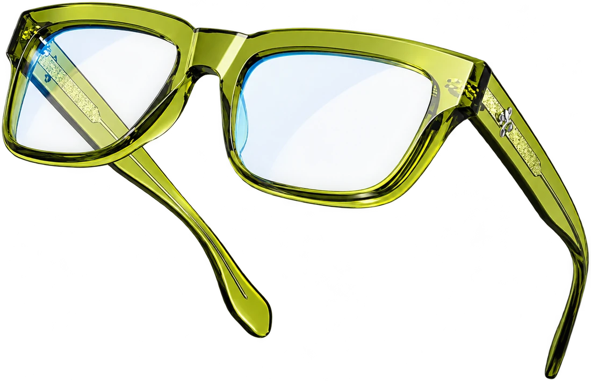
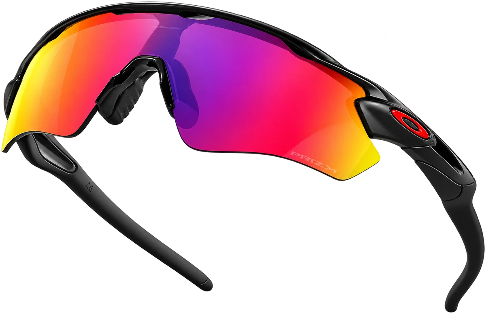

O cuidado que você sente.
O estilo que você vê.
ÓTICA & RELOJOALHERIA
Seu mundo.Um novo olhar.
Para ver a vida. Para expressar quem você é.
Seus olhos dão vida a cada detalhe. Merecem cuidado em cada novo olhar.
“Cuidamos da saúde visual para transformar a vida das pessoas.”
Vamos cuidar do seu olharEnxergar bem.
Se reconhecer.
Se sentir você.
Os óculos fazem parte do seu jeito de estar no mundo. Nas linhas, nas cores e nos pequenos detalhes, existe uma forma de expressar quem você é.
Descubra novas possibilidades O seu próximo olhar começa aqui.
Um estilo para
cada versão sua.
Qual combina com o seu momento?
Explore as inspirações e converse com a
gente para conhecer os modelos da loja.
4 inspirações disponíveis
Seu ritmo.
Seu jeito de ver.
Da rotina aos seus próximos caminhos.
Inspire-se em um olhar cheio de atitude.

Entre. Experimente.
Sinta a diferença.
Um espaço para olhar com calma,
descobrir possibilidades e encontrar
o que faz sentido para você.
Av. Pref. Valdir Masutti, 743 · Jardim Mato Grosso
Comodoro — MT · CEP 78310-000
Conte para a gente o que você procura.
A conversa começa com você.